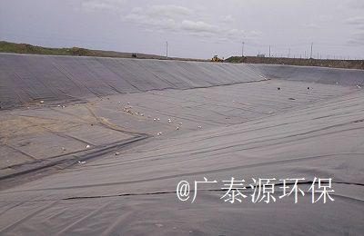
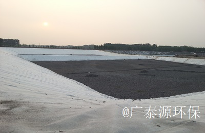

污染隔离防渗涵盖煤化工矿业防渗、生活垃圾填埋场、堆浸场、事故池、调节池、工业废水暂存、人工湖泊等领域。
广泰源拥有一支经验丰富、技术精湛的专业防渗施工队伍，并通过“传、帮、带”，不断优化人才储备梯队。防渗施工机械设备均由瑞士进口，人才与设备优势兼具，配合健全的施工和质量管理体系，执行严格自检程序，使广泰源污染防渗工程施工水平在国内遥遥领先。同时，公司与国内外著名土工材料企业紧密合作，施工材料优质可靠，客户满意度大大提高，确保了项目的可持续发展。
广泰源环保持续发展，防渗业绩不断向全国各区域拓展。
 